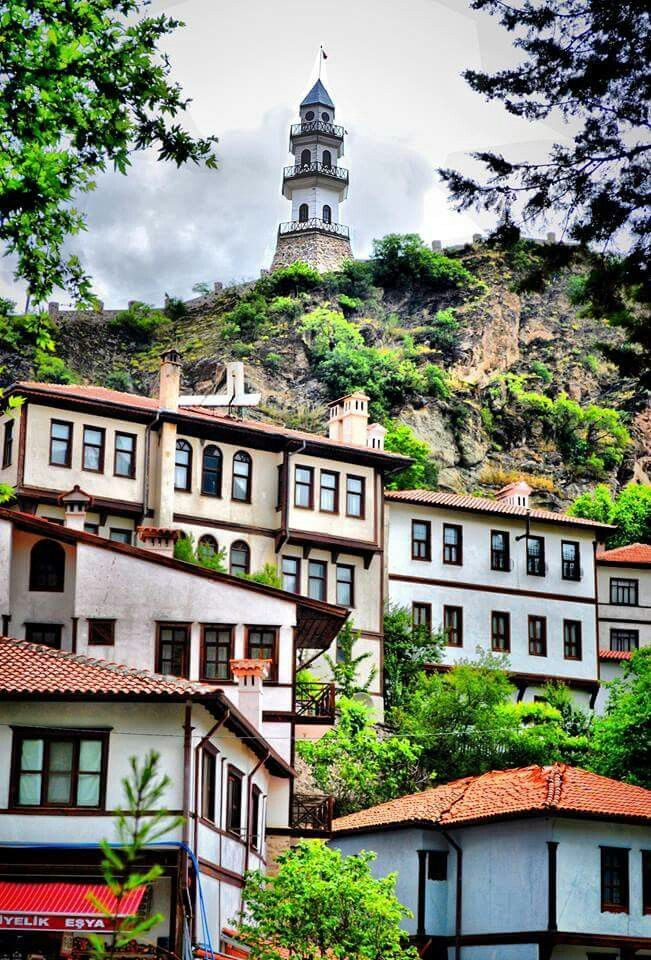
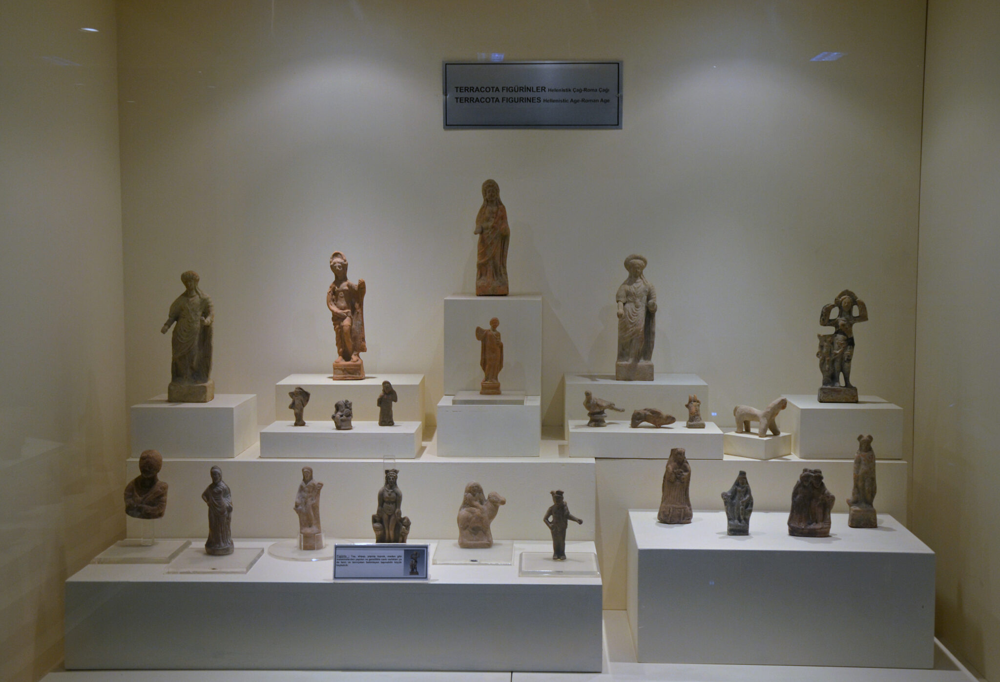

Bolu'nun derin tarihinden günümüze taşınan eşsiz hazineler.

Bolu'nun Mudurnu ve Göynük ilçeleri, Osmanlı döneminden kalma sivil mimari dokusuyla adeta bir açık hava müzesi niteliğindedir. UNESCO Dünya Miras Geçici Listesi'nde yer alan bu bölgeler, tarihi İpek Yolu üzerindeki durak noktaları olarak büyük öneme sahiptir.
Bu evler; ahşap oymalı tavanları, avlulu yapıları ve karakteristik "çıkma"larıyla Türk ev tipolojisinin en saf örneklerini sunar. Akşemseddin Hazretleri'nin diyarı Göynük ve İpek Yolu'nun kalbi Mudurnu, kültürel mirasımızın en zarif parçalarıdır.

1975 yılında kurulan Bolu Müzesi, bölgenin Neolitik dönemden Osmanlı'ya kadar uzanan binlerce yıllık tarihini gözler önüne sermektedir. Müze, arkeolojik ve etnografik olmak üzere iki ana bölümden oluşur.
Arkeoloji Bölümü'nde; Roma, Bizans ve Hitit dönemlerine ait heykeller, mezar stelleri ve sikkeler yer alırken; Etnografya Bölümü'nde Bolu yöresine özgü el sanatları, geleneksel kıyafetler ve mutfak kültürü sergilenmektedir. Bolu'nun hafızası bu müzede korunmaktadır.